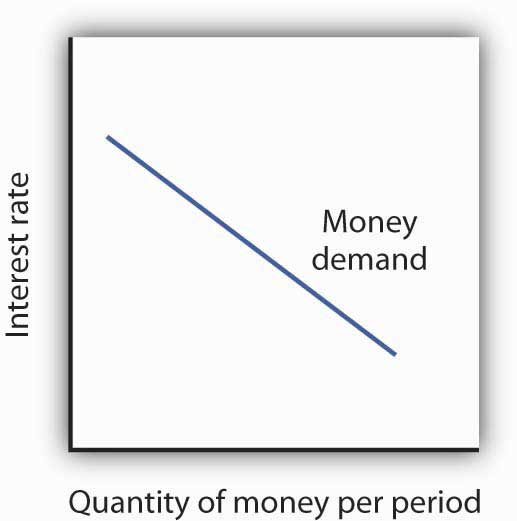
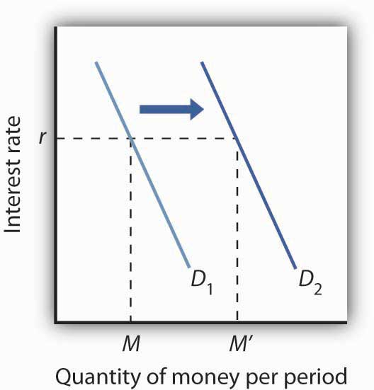
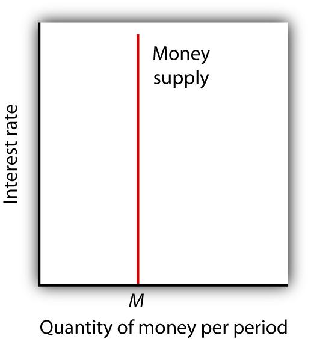
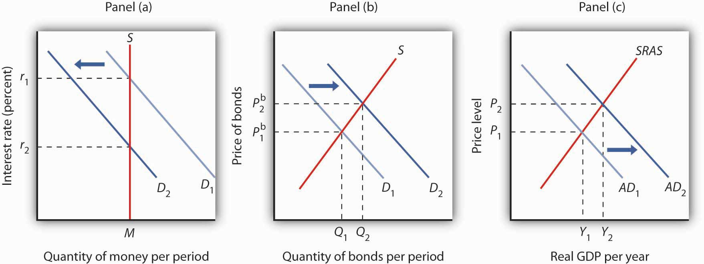
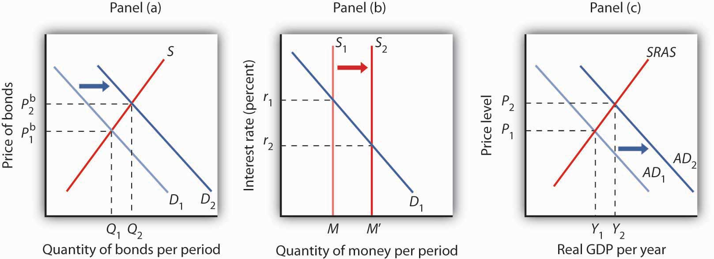

In this section we will explore the link between money markets, bond markets, and interest rates. We first look at the demand for money. The demand curve for money is derived like any other demand curve, by examining the relationship between the “price” of money (which, we will see, is the interest rate) and the quantity demanded, holding all other determinants unchanged. We then link the demand for money to the concept of money supply developed in the last chapter, to determine the equilibrium rate of interest. In turn, we show how changes in interest rates affect the macroeconomy.
In deciding how much money to hold, people make a choice about how to hold their wealth. How much wealth shall be held as money and how much as other assets? For a given amount of wealth, the answer to this question will depend on the relative costs and benefits of holding money versus other assets. The demand for moneyThe relationship between the quantity of money people want to hold and the factors that determine that quantity. is the relationship between the quantity of money people want to hold and the factors that determine that quantity.
To simplify our analysis, we will assume there are only two ways to hold wealth: as money in a checking account, or as funds in a bond market mutual fund that purchases long-term bonds on behalf of its subscribers. A bond fund is not money. Some money deposits earn interest, but the return on these accounts is generally lower than what could be obtained in a bond fund. The advantage of checking accounts is that they are highly liquid and can thus be spent easily. We will think of the demand for money as a curve that represents the outcomes of choices between the greater liquidity of money deposits and the higher interest rates that can be earned by holding a bond fund. The difference between the interest rates paid on money deposits and the interest return available from bonds is the cost of holding money.
One reason people hold their assets as money is so that they can purchase goods and services. The money held for the purchase of goods and services may be for everyday transactions such as buying groceries or paying the rent, or it may be kept on hand for contingencies such as having the funds available to pay to have the car fixed or to pay for a trip to the doctor.
The transactions demand for moneyMoney people hold to pay for goods and services they anticipate buying. is money people hold to pay for goods and services they anticipate buying. When you carry money in your purse or wallet to buy a movie ticket or maintain a checking account balance so you can purchase groceries later in the month, you are holding the money as part of your transactions demand for money.
The money people hold for contingencies represents their precautionary demand for moneyThe money people hold for contingencies.. Money held for precautionary purposes may include checking account balances kept for possible home repairs or health-care needs. People do not know precisely when the need for such expenditures will occur, but they can prepare for them by holding money so that they’ll have it available when the need arises.
People also hold money for speculative purposes. Bond prices fluctuate constantly. As a result, holders of bonds not only earn interest but experience gains or losses in the value of their assets. Bondholders enjoy gains when bond prices rise and suffer losses when bond prices fall. Because of this, expectations play an important role as a determinant of the demand for bonds. Holding bonds is one alternative to holding money, so these same expectations can affect the demand for money.
John Maynard Keynes, who was an enormously successful speculator in bond markets himself, suggested that bondholders who anticipate a drop in bond prices will try to sell their bonds ahead of the price drop in order to avoid this loss in asset value. Selling a bond means converting it to money. Keynes referred to the speculative demand for moneyThe money held in response to concern that bond prices and the prices of other financial assets might change. as the money held in response to concern that bond prices and the prices of other financial assets might change.
Of course, money is money. One cannot sort through someone’s checking account and locate which funds are held for transactions and which funds are there because the owner of the account is worried about a drop in bond prices or is taking a precaution. We distinguish money held for different motives in order to understand how the quantity of money demanded will be affected by a key determinant of the demand for money: the interest rate.
The quantity of money people hold to pay for transactions and to satisfy precautionary and speculative demand is likely to vary with the interest rates they can earn from alternative assets such as bonds. When interest rates rise relative to the rates that can be earned on money deposits, people hold less money. When interest rates fall, people hold more money. The logic of these conclusions about the money people hold and interest rates depends on the people’s motives for holding money.
The quantity of money households want to hold varies according to their income and the interest rate; different average quantities of money held can satisfy their transactions and precautionary demands for money. To see why, suppose a household earns and spends $3,000 per month. It spends an equal amount of money each day. For a month with 30 days, that is $100 per day. One way the household could manage this spending would be to leave the money in a checking account, which we will assume pays zero interest. The household would thus have $3,000 in the checking account when the month begins, $2,900 at the end of the first day, $1,500 halfway through the month, and zero at the end of the last day of the month. Averaging the daily balances, we find that the quantity of money the household demands equals $1,500. This approach to money management, which we will call the “cash approach,” has the virtue of simplicity, but the household will earn no interest on its funds.
Consider an alternative money management approach that permits the same pattern of spending. At the beginning of the month, the household deposits $1,000 in its checking account and the other $2,000 in a bond fund. Assume the bond fund pays 1% interest per month, or an annual interest rate of 12.7%. After 10 days, the money in the checking account is exhausted, and the household withdraws another $1,000 from the bond fund for the next 10 days. On the 20th day, the final $1,000 from the bond fund goes into the checking account. With this strategy, the household has an average daily balance of $500, which is the quantity of money it demands. Let us call this money management strategy the “bond fund approach.”
Remember that both approaches allow the household to spend $3,000 per month, $100 per day. The cash approach requires a quantity of money demanded of $1,500, while the bond fund approach lowers this quantity to $500.
The bond fund approach generates some interest income. The household has $1,000 in the fund for 10 days (1/3 of a month) and $1,000 for 20 days (2/3 of a month). With an interest rate of 1% per month, the household earns $10 in interest each month ([$1,000 × 0.01 × 1/3] + [$1,000 × 0.01 × 2/3]). The disadvantage of the bond fund, of course, is that it requires more attention—$1,000 must be transferred from the fund twice each month. There may also be fees associated with the transfers.
Of course, the bond fund strategy we have examined here is just one of many. The household could begin each month with $1,500 in the checking account and $1,500 in the bond fund, transferring $1,500 to the checking account midway through the month. This strategy requires one less transfer, but it also generates less interest—$7.50 (= $1,500 × 0.01 × 1/2). With this strategy, the household demands a quantity of money of $750. The household could also maintain a much smaller average quantity of money in its checking account and keep more in its bond fund. For simplicity, we can think of any strategy that involves transferring money in and out of a bond fund or another interest-earning asset as a bond fund strategy.
Which approach should the household use? That is a choice each household must make—it is a question of weighing the interest a bond fund strategy creates against the hassle and possible fees associated with the transfers it requires. Our example does not yield a clear-cut choice for any one household, but we can make some generalizations about its implications.
First, a household is more likely to adopt a bond fund strategy when the interest rate is higher. At low interest rates, a household does not sacrifice much income by pursuing the simpler cash strategy. As the interest rate rises, a bond fund strategy becomes more attractive. That means that the higher the interest rate, the lower the quantity of money demanded.
Second, people are more likely to use a bond fund strategy when the cost of transferring funds is lower. The creation of savings plans, which began in the 1970s and 1980s, that allowed easy transfer of funds between interest-earning assets and checkable deposits tended to reduce the demand for money.
Some money deposits, such as savings accounts and money market deposit accounts, pay interest. In evaluating the choice between holding assets as some form of money or in other forms such as bonds, households will look at the differential between what those funds pay and what they could earn in the bond market. A higher interest rate in the bond market is likely to increase this differential; a lower interest rate will reduce it. An increase in the spread between rates on money deposits and the interest rate in the bond market reduces the quantity of money demanded; a reduction in the spread increases the quantity of money demanded.
Firms, too, must determine how to manage their earnings and expenditures. However, instead of worrying about $3,000 per month, even a relatively small firm may be concerned about $3,000,000 per month. Rather than facing the difference of $10 versus $7.50 in interest earnings used in our household example, this small firm would face a difference of $2,500 per month ($10,000 versus $7,500). For very large firms such as Toyota or AT&T, interest rate differentials among various forms of holding their financial assets translate into millions of dollars per day.
How is the speculative demand for money related to interest rates? When financial investors believe that the prices of bonds and other assets will fall, their speculative demand for money goes up. The speculative demand for money thus depends on expectations about future changes in asset prices. Will this demand also be affected by present interest rates?
If interest rates are low, bond prices are high. It seems likely that if bond prices are high, financial investors will become concerned that bond prices might fall. That suggests that high bond prices—low interest rates—would increase the quantity of money held for speculative purposes. Conversely, if bond prices are already relatively low, it is likely that fewer financial investors will expect them to fall still further. They will hold smaller speculative balances. Economists thus expect that the quantity of money demanded for speculative reasons will vary negatively with the interest rate.
We have seen that the transactions, precautionary, and speculative demands for money vary negatively with the interest rate. Putting those three sources of demand together, we can draw a demand curve for money to show how the interest rate affects the total quantity of money people hold. The demand curve for moneyCurve that shows the quantity of money demanded at each interest rate, all other things unchanged. shows the quantity of money demanded at each interest rate, all other things unchanged. Such a curve is shown in Figure 25.5 "The Demand Curve for Money". An increase in the interest rate reduces the quantity of money demanded. A reduction in the interest rate increases the quantity of money demanded.
Figure 25.5 The Demand Curve for Money
The demand curve for money shows the quantity of money demanded at each interest rate. Its downward slope expresses the negative relationship between the quantity of money demanded and the interest rate.
The relationship between interest rates and the quantity of money demanded is an application of the law of demand. If we think of the alternative to holding money as holding bonds, then the interest rate—or the differential between the interest rate in the bond market and the interest paid on money deposits—represents the price of holding money. As is the case with all goods and services, an increase in price reduces the quantity demanded.
We draw the demand curve for money to show the quantity of money people will hold at each interest rate, all other determinants of money demand unchanged. A change in those “other determinants” will shift the demand for money. Among the most important variables that can shift the demand for money are the level of income and real GDP, the price level, expectations, transfer costs, and preferences.
A household with an income of $10,000 per month is likely to demand a larger quantity of money than a household with an income of $1,000 per month. That relationship suggests that money is a normal good: as income increases, people demand more money at each interest rate, and as income falls, they demand less.
An increase in real GDP increases incomes throughout the economy. The demand for money in the economy is therefore likely to be greater when real GDP is greater.
The higher the price level, the more money is required to purchase a given quantity of goods and services. All other things unchanged, the higher the price level, the greater the demand for money.
The speculative demand for money is based on expectations about bond prices. All other things unchanged, if people expect bond prices to fall, they will increase their demand for money. If they expect bond prices to rise, they will reduce their demand for money.
The expectation that bond prices are about to change actually causes bond prices to change. If people expect bond prices to fall, for example, they will sell their bonds, exchanging them for money. That will shift the supply curve for bonds to the right, thus lowering their price. The importance of expectations in moving markets can lead to a self-fulfilling prophecy.
Expectations about future price levels also affect the demand for money. The expectation of a higher price level means that people expect the money they are holding to fall in value. Given that expectation, they are likely to hold less of it in anticipation of a jump in prices.
Expectations about future price levels play a particularly important role during periods of hyperinflation. If prices rise very rapidly and people expect them to continue rising, people are likely to try to reduce the amount of money they hold, knowing that it will fall in value as it sits in their wallets or their bank accounts. Toward the end of the great German hyperinflation of the early 1920s, prices were doubling as often as three times a day. Under those circumstances, people tried not to hold money even for a few minutes—within the space of eight hours money would lose half its value!
For a given level of expenditures, reducing the quantity of money demanded requires more frequent transfers between nonmoney and money deposits. As the cost of such transfers rises, some consumers will choose to make fewer of them. They will therefore increase the quantity of money they demand. In general, the demand for money will increase as it becomes more expensive to transfer between money and nonmoney accounts. The demand for money will fall if transfer costs decline. In recent years, transfer costs have fallen, leading to a decrease in money demand.
Preferences also play a role in determining the demand for money. Some people place a high value on having a considerable amount of money on hand. For others, this may not be important.
Household attitudes toward risk are another aspect of preferences that affect money demand. As we have seen, bonds pay higher interest rates than money deposits, but holding bonds entails a risk that bond prices might fall. There is also a chance that the issuer of a bond will default, that is, will not pay the amount specified on the bond to bondholders; indeed, bond issuers may end up paying nothing at all. A money deposit, such as a savings deposit, might earn a lower yield, but it is a safe yield. People’s attitudes about the trade-off between risk and yields affect the degree to which they hold their wealth as money. Heightened concerns about risk in the last half of 2008 led many households to increase their demand for money.
Figure 25.6 "An Increase in Money Demand" shows an increase in the demand for money. Such an increase could result from a higher real GDP, a higher price level, a change in expectations, an increase in transfer costs, or a change in preferences.
Figure 25.6 An Increase in Money Demand
An increase in real GDP, the price level, or transfer costs, for example, will increase the quantity of money demanded at any interest rate r, increasing the demand for money from D1 to D2. The quantity of money demanded at interest rate r rises from M to M′. The reverse of any such events would reduce the quantity of money demanded at every interest rate, shifting the demand curve to the left.
The supply curve of moneyCurve that shows the relationship between the quantity of money supplied and the market interest rate, all other determinants of supply unchanged. shows the relationship between the quantity of money supplied and the market interest rate, all other determinants of supply unchanged. We have learned that the Fed, through its open-market operations, determines the total quantity of reserves in the banking system. We shall assume that banks increase the money supply in fixed proportion to their reserves. Because the quantity of reserves is determined by Federal Reserve policy, we draw the supply curve of money in Figure 25.7 "The Supply Curve of Money" as a vertical line, determined by the Fed’s monetary policies. In drawing the supply curve of money as a vertical line, we are assuming the money supply does not depend on the interest rate. Changing the quantity of reserves and hence the money supply is an example of monetary policy.
Figure 25.7 The Supply Curve of Money
We assume that the quantity of money supplied in the economy is determined as a fixed multiple of the quantity of bank reserves, which is determined by the Fed. The supply curve of money is a vertical line at that quantity.
The money marketThe interaction among institutions through which money is supplied to individuals, firms, and other institutions that demand money. is the interaction among institutions through which money is supplied to individuals, firms, and other institutions that demand money. Money market equilibriumThe interest rate at which the quantity of money demanded is equal to the quantity of money supplied. occurs at the interest rate at which the quantity of money demanded is equal to the quantity of money supplied. Figure 25.8 "Money Market Equilibrium" combines demand and supply curves for money to illustrate equilibrium in the market for money. With a stock of money (M), the equilibrium interest rate is r.
Figure 25.8 Money Market Equilibrium

The market for money is in equilibrium if the quantity of money demanded is equal to the quantity of money supplied. Here, equilibrium occurs at interest rate r.
A shift in money demand or supply will lead to a change in the equilibrium interest rate. Let’s look at the effects of such changes on the economy.
Suppose that the money market is initially in equilibrium at r1 with supply curve S and a demand curve D1 as shown in Panel (a) of Figure 25.9 "A Decrease in the Demand for Money". Now suppose that there is a decrease in money demand, all other things unchanged. A decrease in money demand could result from a decrease in the cost of transferring between money and nonmoney deposits, from a change in expectations, or from a change in preferences.In this chapter we are looking only at changes that originate in financial markets to see their impact on aggregate demand and aggregate supply. Changes in the price level and in real GDP also shift the money demand curve, but these changes are the result of changes in aggregate demand or aggregate supply and are considered in more advanced courses in macroeconomics. Panel (a) shows that the money demand curve shifts to the left to D2. We can see that the interest rate will fall to r2. To see why the interest rate falls, we recall that if people want to hold less money, then they will want to hold more bonds. Thus, Panel (b) shows that the demand for bonds increases. The higher price of bonds means lower interest rates; lower interest rates restore equilibrium in the money market.
Figure 25.9 A Decrease in the Demand for Money
A decrease in the demand for money due to a change in transactions costs, preferences, or expectations, as shown in Panel (a), will be accompanied by an increase in the demand for bonds as shown in Panel (b), and a fall in the interest rate. The fall in the interest rate will cause a rightward shift in the aggregate demand curve from AD1 to AD2, as shown in Panel (c). As a result, real GDP and the price level rise.
Lower interest rates in turn increase the quantity of investment. They also stimulate net exports, as lower interest rates lead to a lower exchange rate. The aggregate demand curve shifts to the right as shown in Panel (c) from AD1 to AD2. Given the short-run aggregate supply curve SRAS, the economy moves to a higher real GDP and a higher price level.
An increase in money demand due to a change in expectations, preferences, or transactions costs that make people want to hold more money at each interest rate will have the opposite effect. The money demand curve will shift to the right and the demand for bonds will shift to the left. The resulting higher interest rate will lead to a lower quantity of investment. Also, higher interest rates will lead to a higher exchange rate and depress net exports. Thus, the aggregate demand curve will shift to the left. All other things unchanged, real GDP and the price level will fall.
Now suppose the market for money is in equilibrium and the Fed changes the money supply. All other things unchanged, how will this change in the money supply affect the equilibrium interest rate and aggregate demand, real GDP, and the price level?
Suppose the Fed conducts open-market operations in which it buys bonds. This is an example of expansionary monetary policy. The impact of Fed bond purchases is illustrated in Panel (a) of Figure 25.10 "An Increase in the Money Supply". The Fed’s purchase of bonds shifts the demand curve for bonds to the right, raising bond prices to Pb2. As we learned, when the Fed buys bonds, the supply of money increases. Panel (b) of Figure 25.10 "An Increase in the Money Supply" shows an economy with a money supply of M, which is in equilibrium at an interest rate of r1. Now suppose the bond purchases by the Fed as shown in Panel (a) result in an increase in the money supply to M′; that policy change shifts the supply curve for money to the right to S2. At the original interest rate r1, people do not wish to hold the newly supplied money; they would prefer to hold nonmoney assets. To reestablish equilibrium in the money market, the interest rate must fall to increase the quantity of money demanded. In the economy shown, the interest rate must fall to r2 to increase the quantity of money demanded to M′.
Figure 25.10 An Increase in the Money Supply
The Fed increases the money supply by buying bonds, increasing the demand for bonds in Panel (a) from D1 to D2 and the price of bonds to Pb2. This corresponds to an increase in the money supply to M′ in Panel (b). The interest rate must fall to r2 to achieve equilibrium. The lower interest rate leads to an increase in investment and net exports, which shifts the aggregate demand curve from AD1 to AD2 in Panel (c). Real GDP and the price level rise.
The reduction in interest rates required to restore equilibrium to the market for money after an increase in the money supply is achieved in the bond market. The increase in bond prices lowers interest rates, which will increase the quantity of money people demand. Lower interest rates will stimulate investment and net exports, via changes in the foreign exchange market, and cause the aggregate demand curve to shift to the right, as shown in Panel (c), from AD1 to AD2. Given the short-run aggregate supply curve SRAS, the economy moves to a higher real GDP and a higher price level.
Open-market operations in which the Fed sells bonds—that is, a contractionary monetary policy—will have the opposite effect. When the Fed sells bonds, the supply curve of bonds shifts to the right and the price of bonds falls. The bond sales lead to a reduction in the money supply, causing the money supply curve to shift to the left and raising the equilibrium interest rate. Higher interest rates lead to a shift in the aggregate demand curve to the left.
As we have seen in looking at both changes in demand for and in supply of money, the process of achieving equilibrium in the money market works in tandem with the achievement of equilibrium in the bond market. The interest rate determined by money market equilibrium is consistent with the interest rate achieved in the bond market.
In 2005 the Fed was concerned about the possibility that the United States was moving into an inflationary gap, and it adopted a contractionary monetary policy as a result. Draw a four-panel graph showing this policy and its expected results. In Panel (a), use the model of aggregate demand and aggregate supply to illustrate an economy with an inflationary gap. In Panel (b), show how the Fed’s policy will affect the market for bonds. In Panel (c), show how it will affect the demand for and supply of money. In Panel (d), show how it will affect the exchange rate. Finally, return to Panel (a) and incorporate these developments into your analysis of aggregate demand and aggregate supply, and show how the Fed’s policy will affect real GDP and the price level in the short run.
The models of the money and bond markets presented in this chapter suggest that the Fed can control the interest rate by deciding on a money supply that would lead to the desired equilibrium interest rate in the money market. Yet, Fed policy announcements typically focus on what it wants the federal funds rate to be with scant attention to the money supply. Whereas throughout the 1990s, the Fed would announce a target federal funds rate and also indicate an expected change in the money supply, in 2000, when legislation requiring it to do so expired, it abandoned the practice of setting money supply targets.
Why the shift? The factors that have made focusing on the money supply as a policy target difficult for the past 25 years are first banking deregulation in the 1980s followed by financial innovations associated with technological changes—in particular the maturation of electronic payment and transfer mechanisms—thereafter.
Before the 1980s, M1 was a fairly reliable measure of the money people held, primarily for transactions. To buy things, one used cash, checks written on demand deposits, or traveler’s checks. The Fed could thus use reliable estimates of the money demand curve to predict what the money supply would need to be in order to bring about a certain interest rate in the money market.
Legislation in the early 1980s allowed for money market deposit accounts (MMDAs), which are essentially interest-bearing savings accounts on which checks can be written. MMDAs are part of M2. Shortly after, other forms of payments for transactions developed or became more common. For example, credit and debit card use has mushroomed (from $10.8 billion in 1990 to $30 billion in 2000), and people can pay their credit card bills, electronically or with paper checks, from accounts that are part of either M1 or M2. Another innovation of the last 20 years is the automatic transfer service (ATS) that allows consumers to move money between checking and savings accounts at an ATM machine, or online, or through prearranged agreements with their financial institutions. While we take these methods of payment for granted today, they did not exist before 1980 because of restrictive banking legislation and the lack of technological know-how. Indeed, before 1980, being able to pay bills from accounts that earned interest was unheard of.
Further blurring the lines between M1 and M2 has been the development and growing popularity of what are called retail sweep programs. Since 1994, banks have been using retail-sweeping software to dynamically reclassify balances as either checking account balances (part of M1) or MMDAs (part of M2). They do this to avoid reserve requirements on checking accounts. The software not only moves the funds but also ensures that the bank does not exceed the legal limit of six reclassifications in any month. In the last 10 years these retail sweeps rose from zero to nearly the size of M1 itself!
Such changes in the ways people pay for transactions and banks do their business have led economists to think about new definitions of money that would better track what is actually used for the purposes behind the money demand curve. One notion is called MZM, which stands for “money zero maturity.” The idea behind MZM is that people can easily use any deposits that do not have specified maturity terms to pay for transactions, as these accounts are quite liquid, regardless of what classification of money they fall into. Some research shows that using MZM allows for a stable picture of the money market. Until more agreement has been reached, though, we should expect the Fed to continue to downplay the role of the money supply in its policy deliberations and to continue to announce its intentions in terms of the federal funds rate.
Source: Pedre Teles and Ruilin Zhou, “A Stable Money Demand: Looking for the Right Monetary Aggregate,” Federal Reserve Bank of Chicago Economic Perspectives 29 (First Quarter, 2005): 50–59.
In Panel (a), with the aggregate demand curve AD1, short-run aggregate supply curve SRAS, and long-run aggregate supply curve LRAS, the economy has an inflationary gap of Y1 − YP. The contractionary monetary policy means that the Fed sells bonds—a rightward shift of the bond supply curve in Panel (b), which decreases the money supply—as shown by a leftward shift in the money supply curve in Panel (c). In Panel (b), we see that the price of bonds falls, and in Panel (c) that the interest rate rises. A higher interest rate will reduce the quantity of investment demanded. The higher interest rate also leads to a higher exchange rate, as shown in Panel (d), as the demand for dollars increases and the supply decreases. The higher exchange rate will lead to a decrease in net exports. As a result of these changes in financial markets, the aggregate demand curve shifts to the left to AD2 in Panel (a). If all goes according to plan (and we will learn in the next chapter that it may not!), the new aggregate demand curve will intersect SRAS and LRAS at YP.